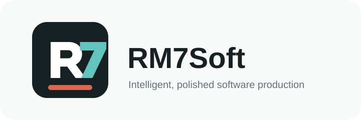
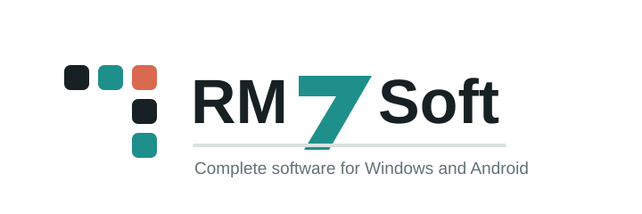

Concept A: rm7 monogram
Best for a compact brand mark, favicon, social avatar, and a strong header lockup.
Two early vector directions for the parent rm7soft brand. RoutineRun can keep its own app icon while rm7soft gets a broader software-company identity.

Best for a compact brand mark, favicon, social avatar, and a strong header lockup.

Best for a cleaner product-company feel, with the blocks hinting at multiple software products.
These are intentionally simple SVG drafts. Once you pick a direction, we can refine spacing, colors, and the small mark, then replace the temporary site mark.